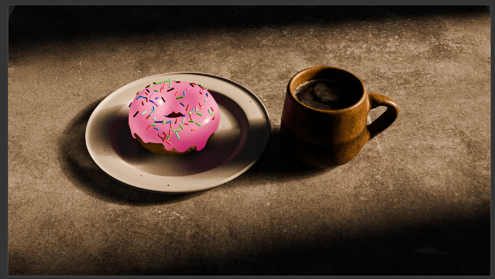

OUR IDEAS, IN 3D
MADE TO
BE SEEN.
Two different scenes, two different creative challenges — brought together in one shared showcase.
International
Space Station.
A study in structure, scale and detail.

Recreating a remarkable piece of human engineering in a digital 3D scene.
The International Space Station is made up of connected modules, long structural elements and broad solar arrays. Our model explores how these different parts come together to form one recognisable structure.
Building a scene like this invites us to think about proportion, arrangement and detail. It also shows how a complex subject can be approached by creating and positioning many individual forms.
Donut & Coffee.
A familiar moment, recreated as a 3D scene.

Turning everyday objects into a carefully styled product image.
This scene brings together a pink-frosted donut with colourful sprinkles, a plate and a cup of coffee. The objects are familiar, but presenting them convincingly in 3D takes attention to shape, surface and the way light falls across each material.
The warm lighting and shadows help give the scene depth and atmosphere. It is a reminder that even a simple subject can become an engaging visual when the details are considered.
From the scale of a space station to the details of a coffee break — 3D gives ideas a form.
Both projects are presented as collaborative workshop work.